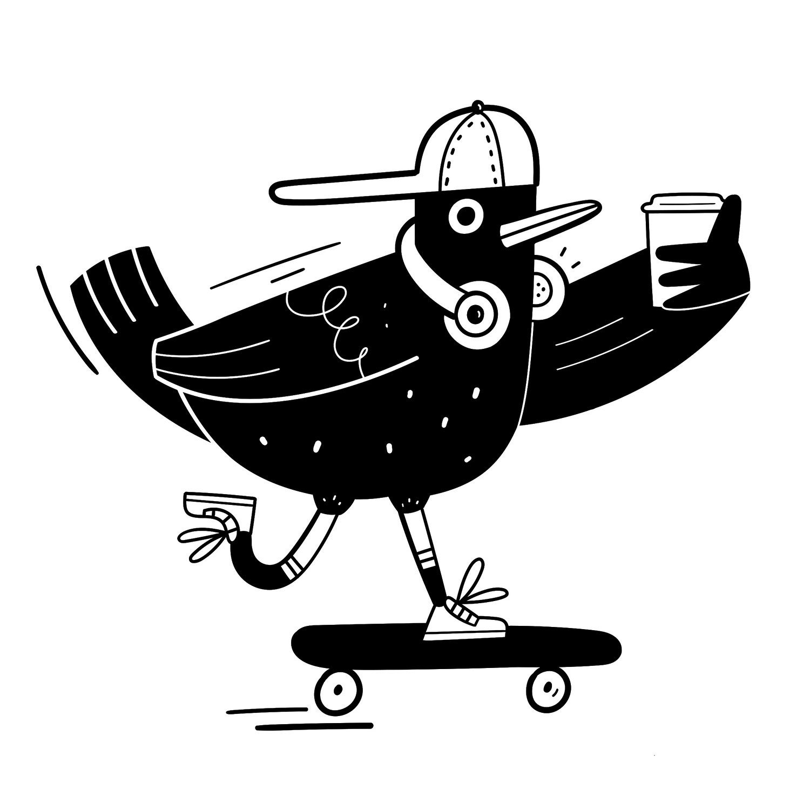
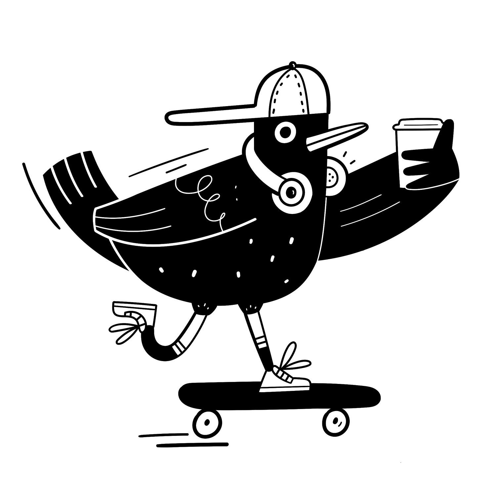

VISIONI ILLUSTRATE
VIAGGIO DELL'ILLUSTRAZIONE CONTEPORANEA
HATTIE CLARK
Hattie Clark's illustrations are a pure reflection of her character - friendly, kind & enthusiastic. She draws the kind of folks you want to sit down and have a cup of tea with. Based in Leeds (UK), Hattie has perfected her self-proclaimed 'wobbly' illustration style and loves to draw a wide variety of subjects, including people, animals and buildings. She can work both digitally or by hand, using brush & ink (see if you can spot which is which). This also makes her work perfect for animation, as you can see throughout her portfolio.
Some of the people Hattie has worked with so far include: Stagecoach, Stack Magazines, Pieminister, Lucy and Yak, The Charity for Civil Servants, Bath Spa University, House of Fu, Leeds Bid. We predict that's a list which will grow and grow!
opere


 
